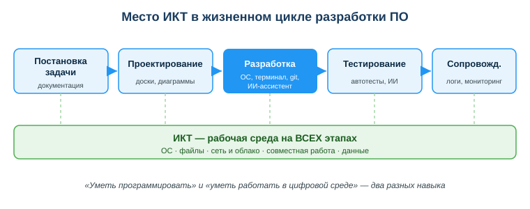
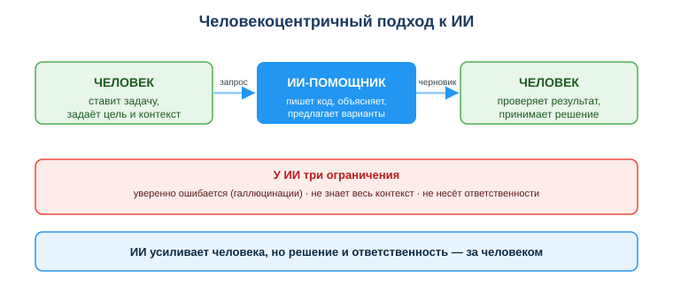

Ты получил тестовое задание на стажировку: «развернуть проект и добавить одну функцию». Кода ты не боишься — но проект не запускается: не та версия окружения, не настроен терминал, не клонируется репозиторий. Час уходит не на функцию, а на борьбу со средой.
Рядом коллега просит ИИ-ассистента написать функцию проверки пароля. ИИ выдаёт код, который запускается, и коллега сдаёт его как есть. Позже выясняется: пароли хранятся в открытом виде. Два разных провала — но причина одна: инструменты были, а владения средой и контроля над результатом не хватило.

Между идеей и работающей программой стоит целая цепочка инструментов: операционная система, терминал, git, облако, мессенджеры, базы знаний и всё чаще — ИИ-ассистенты. Чем лучше ты владеешь этой средой, тем больше времени остаётся на главное — решать задачу, а не воевать с окружением.
Связь с профессией: работодатель оценивает не только то, как ты пишешь код, но и то, как быстро ты входишь в проект, работаешь в команде через git, проверяешь чужой (в том числе ИИ-сгенерированный) код и не допускаешь утечек данных. Это и есть «уметь работать в цифровой среде» — навык, который ценится наравне с языком программирования.
Посмотри на схему «Место ИКТ в жизненном цикле разработки ПО» выше. Ответь на вопросы:
Для разработчика ИКТ — не отдельная дисциплина «на потом», а среда, в которой ты работаешь каждый день: ОС и файловая система, терминал, сеть и облако, инструменты совместной работы, данные.
ИКТ работают не на одном этапе, а на всех — меняется только набор инструментов.
| Этап | Что реально используешь |
|---|---|
| Постановка задачи | справочные системы, документация, переписка с заказчиком |
| Проектирование | онлайн-доски, диаграммы, совместные документы |
| Разработка | ОС, терминал, репозиторий (git/GitHub), ИИ-ассистент |
| Тестирование | автотесты, ИИ для поиска ошибок |
| Сопровождение | мониторинг, логи, данные обратной связи |
Вывод: «уметь программировать» и «уметь работать в цифровой среде» — это два разных навыка, и второй не менее важен.
Цифровая трансформация — перестройка процессов и услуг вокруг данных и цифровых технологий. В Казахстане это видно на каждом шагу: eGov, цифровой банкинг (Kaspi), электронные госуслуги, открытые данные. Как разработчик ты не просто пользуешься этими сервисами — завтра ты будешь их строить.
ИИ-ассистент быстро пишет код, объясняет ошибку, генерирует тест. Но у него есть три свойства, которые меняют правила игры:

На практике: ИИ усиливает тебя, но финальное решение и проверку делаешь ты; любой результат ИИ ты критически оцениваешь перед использованием; ты соблюдаешь права человека, приватность и законы РК (нельзя скармливать ИИ чужие персональные данные).
Студент попросил ИИ написать функцию проверки пароля. ИИ выдал код, который «работает», но хранит пароли в открытом виде. Студент сдал как есть. Кто виноват в утечке — ИИ или студент? Ответственность за результат остаётся на человеке, который этот код применил.
Ответь письменно:
Источник: UNESCO AI Competency Framework for Students (2024); DigComp 2.2; Закон РК «О персональных данных и их защите».
Разработал: преподаватель ИКТ, магистр управления и информационной безопасности Калиаскаров Д.А.
Материал разработан рабочей группой ТОО «Колледж Хекслет Казахстан» и одобрен к использованию в обучении решением Педагогического совета.